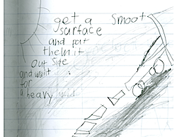
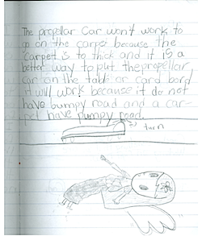
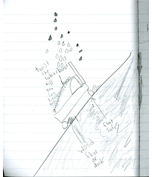

The responsive teaching and learning examples presented below occurred prior to the publication of the NGSS; however, students were nonetheless engaged in efforts called for by performance expectations. Although the goal of these lessons was not intended to help students develop an understanding of specific core ideas in science, nevertheless, the responsive nature of the classroom activity and the context for their explorations encouraged students to explicitly discuss those core ideas. This example highlights content, crosscutting concepts, and practices straddling NGSS clusters via robust discussions among 3rd grade students. Students use ideas that can serve as seeds for full development of the age-appropriate NGSS core ideas involving forces and motion. Another page showcases similar engagement by 2nd grade students.
Click here to see the dimensions showcased below. You might like to print or keep the dimensions open for easy reference as you go through the toy car discussion.
Carolyn taught 3rd grade in a suburban public school where she launched a physical science unit involving the motion of toy cars. In this responsive teaching environment, ideas about force and motion emerged naturally in the students' discourse. She began by asking students to suggest various ways for getting different toy cars to move, e.g., push cars, rubber band cars, balloon cars, and so forth. Below, we share a portion of the unit that started on Day 8. This sequence begins with Carolyn showing the class a propeller car. Some students spontaneously use force ideas to explain how it works. Carolyn then lets the car move along a carpet, but it moves only a short distance. Students explain why in term of bumps in the carpet, and eventually use the term friction. Carolyn then asks them to suggest ways of making the car go faster or further. Students suggest three ways: letting the car move on a smooth surface, spinning the blades more times before releasing the car, and letting the car go down a ramp.
In the discussion below each video clip, bold text refers to connections with the Framework and NGSS dimensions linked above, specifically the PS2.A. core idea, the Cause and effect crosscutting concept, and the practices of Developing and Using Models, Constructing Explanations and Designing Solutions, and Communicating Information. Numbers in parentheses (e.g., lines 56-59) refer to line numbers in the transcript.
In the first video, Carolyn introduces the propeller car and asks students how it works.
Video 1: Carolyn introduces the propeller car to her class.
Examine Video 1. Adrian indicates that twisting the propeller numerous times is instrumental in making the car move. In lines 21-23 of the transcript, he communicates his ideas about what actually makes the car move. He says that the wound-up propeller unwinds, sucking air in and then shooting it out, causing the car to move. He seems to have made a connection between pushing and motion: “the force of this thing pushing it … and it would go.” The first it in Adrian’s sentence is ambiguous. Is Adrian referring to the car or the wind? Either way, the push seems important to the motion of the car.
(Bold text refers to the NGSS dimensions described above.)
Later, Carolyn demonstrates the propeller car moving on the carpet. As seen below, it goes only a very short distance. Carolyn then asks the class to write in their journals what would be the best conditions for making the car go faster or further.
Video 2: Carolyn asks students to record ideas on making the car go faster or further.
Examine Video 2. Carolyn's assignment provides the opportunity for students to propose ideas for how to make the car go farther/faster. It also provides an opportunity for students to draw and write about their ideas in their science notebooks—preparation for communicating their ideas to the class at a later time, and also providing the potential to have students explain why they think their method might work (or explain why it did or did not work after it is tried).
Day 9At the next science session, students shared what they had written and drawn in their journals. Just prior to the video segment below, Johnnie initiated a discussion on the role of wind in making the car move. He began by reading from his science notebook (shown to the right) that if you take the car outside, the wind would help it move. The class picked up on discussing how wind would affect the car’s motion, and Carolyn allowed the discussion to go in that direction. |
 Johnnie's Journal |
Video 3: Students share their ideas on making the car go faster or further.
Examine Video 3. This snippet starts with Janet saying that wind coming from behind it would not turn the propeller blades, but instead would push the car, making it go faster (lines 51-54). That is, the push from the wind could add to the push from the spinning propellers, creating a greater push that would make the car go faster.
However, in lines 66-73 Adrian argues that wind coming from behind it wouldn't help, because the air coming from the spinning propeller would just push against it, but if the wind came from the front it would help, essentially adding more air to the air already going through the propeller. Thus, the propellers would push more air out the back, and therefore make the car go faster.
Both Janet and Adrian are communicating their ideas about how pushes combine to predict how they would affect the propeller car's motion, which is supportive of both core ideas PS2.A and PS2.C (relationship between energy and motion). Both students are also using cause and effect (mechanistic) reasoning to support their ideas.
Other students offer different ideas on how to make the car go faster and further. In the video below, Xinru and Adrian discuss the nature of the surface the car rolls on.
Video 4: Students discuss the effects of different surfaces.
Examine Video 4. Xinru shares from her journal (below left), saying that the propeller car does not work well on the carpet because it is bumpy; a smoother surface would be better (lines 83-86). Adrian talks about the picture he drew in his journal (below right) illustrating a car going down a ramp and then onto a flat surface. The smooth surface is necessary so the wheels don't get stuck, like they would on a carpet (lines 95-104). The students are also engaging at some initial level in the practice of developing and using models, in the sense that they are using a diagram (with supporting text in Xinru's case) to help convey how they are thinking about the car's motion.
It is likely that students are not thinking of the bumpiness in the carpet as being a backwards push that slows down the car. They seem to be thinking of it as an obstacle to the motion of the car, or something that the car wheels get stuck in (you will see this again in other videos below). In this sense, the students seem to be drawing on prior experience and intuitive ideas about bumpiness, rather than invoking a core physics idea (backward pushes) to justify their suggestion for using a smooth surface rather than a carpet, but it presents an opportunity to discuss it. Responsive teaching offers teachers many options. It is up to the teacher to choose the option that seems to make the most sense to follow at a particular time.
|  Xinru's Journal |
 Adrian's Journal |
Later on Day 9 students talk about why the car didn't move very far on the carpet and why it would move better on a smooth table.
Video 5: Students discuss different types of surfaces.
Examine Video 5. Jamilah has a mental model in which the surface plays a role in the car's motion (lines 110-114). She explained that the car did not go very far on the carpet because the carpet has bumps, and she predicted that it would go better on a smooth surface like a table. Erica, Hannah, Andy, and Adrian agree (lines 118-139).
Carolyn chooses for the class to continue with suggesting ways to make the car go faster and further. However, students are definitely interested in the bumpiness of the carpet affecting the car’s motion (e.g. lines 129 to 139). Carolyn could choose to be responsive to this after the class has the opportunity to share more ideas about making the car move further or faster.
On Day 10, Carolyn and the students test their ideas for how to make the car go faster or further. They begin by testing the car on rough and smooth surfaces. Prior to Day 10, Carolyn introduced the word friction to describe a surface with a lot of bumps. You will hear students using this word in the videos.
Video 6: The class tests the car on the rug and a smooth surface.
Next they examine discuss the affect on the car's motion of the number of times the propeller is twisted.
Video 7: The class examines how twisting the propeller affects the car's motion.
This group of students spontaneously focused on the characteristics of the surface that the car rolled along, varying its texture and incline, as well as the incline of the surface that car moved on.
Finally, the class examines their last suggestion, letting the car roll down a ramp.
Prior to their exploration with the propeller car, the class had experimented with a regular toy car (without any mechanism to make it move) and different ramp heights. The class applies what they learned earlier to their design of a ramp for the propeller car.
Video 8: The class explores how a ramp affects the car's motion.
Examine Videos 6, 7, and 8. The class tested their suggestions for how to move the car further or faster, and discovered that a smooth surface was better than the carpet; more twists of the rubber band increased how far the car moved; and the ramp needs to be inclined, but not so steep that the car crashes at the bottom. In Video 8, Hannah made another connection to force and motion. In lines 217-222, she indicates that when you let the propeller car go down a ramp, it gets speed from both the spinning propeller and the ramp, and that the speeds add. This represents the beginnings of the idea that forces can add to produce an enhanced effect (core idea PS2.A.).
Examine all the videos. Some instances of responsiveness have been noted above. In what other ways has Carolyn been responsive to students' ideas in the propeller car exploration? As one example, there are many ways students could have responded to the challenge of making the propeller car go faster and farther. Students could have focused on areas such as changing the size of the propeller, lubricating the areas between moving parts on the car, and using a rubber band that was thicker or longer. This group of students spontaneously focused on the characteristics of the surface that the car rolled along, varying its texture and incline, and how much the propeller was twisted. As shown in the videos, Carolyn responded accordingly.
On Day 12 of the Toy Car uni,t Carolyn's class explored balloon cars. In the video below, students' spontaneously brought the propeller car into their conversation, drawing similarities between the two cars regarding pushes and the resultant motion.
Video 9: The class discusses balloon cars in relation to propeller cars.
Examine Video 9. It is noteworthy that students carry forward their use of pushing ideas as they predict or account for the balloon car's motion. Alec says that more air in the balloon will give it more power to push it further. Other students say the air is pushing it. Carolyn follows up by asking what the air is pushing (against). Eric provides an interesting answer, suggesting that the air coming out of the balloon pushes against heavier air that surrounds the car, and that heavier air is what is pushing the car forward (lines 285-298). At the end, Hannah compares the workings of the balloon car to the propeller car, suggesting that in both cases air goes out one end (and pushes the car forward) (lines 301-311). Both Eric and Hannah are naturally using cause and effect reasoning as a way to explain how the car works.
The videos highlighted here provide examples of students addressing crosscutting concepts and disciplinary core ideas while engaged in scientific practices. In particular, students: offered causal explanations; communicated their explanations and other ideas through text, diagrams, and discussion; and suggested different ways for how to make the propeller car go faster and farther. In making these suggestions to address a problem with the car (not moving far) and then testing what happens, the students were engaged in part of the practice of designing solutions. However, they were not engaged in all components of the design process because, for example, they were not explicitly taking into account constraints or criteria, nor were they using an iterative procedure to improve their designs.
Video 3 offers a particularly rich example. Janet and Adrian connect the motion of the propeller car with ideas about force and motion. Both children talked about pushes causing the car to move, and furthermore articulated that pushes can add to have a net effect. Together the children have employed cause and effect, pushes and motion, and communication!
As another example, in Video 5 Jamilah verbally explained to Carolyn that the car did not go very far on the carpet because the carpet has bumps (lines 110-114). In doing so, Jamilah made use of the crosscutting concept of cause and effect, and communicated this to Carolyn and the class. There are other examples in the videos of the entwinement of the Framework and NGSS dimensions. They can be deciphered by noting the bolded gray text above.
The children's discussions occurred in the context of trying to make the toy car move further and faster. Not only are the children engaging in scientific practices while exploring content, the exploration of content arises in the engagement of a scientific practice. For another example of children exploring force and motion ideas in this project, see video from Carolyn's 2nd grade class the following year.